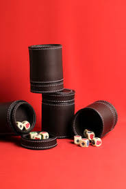

Liar's Dice, also known in spanish as 'Dudo' is a betting game with dices
You can't play alone, you need at least to person to play
Also, it is necessary a carton/leather/or plastic cup to "hide" your dices

Finally, you need five dices for each player to start the game
For each turn you have 5 choices:
- üìàRaise
- üÉèBidding aces
- ❓Call/Doubt/Dudo
- üéØSpot on
- ⏯Pass
The game is explained like this in the
The Wikipedia page of Dudo
Raise: also known as "bid" in most versions, a player can increase the quantity of dice (e.g. from "five threes" to "six threes") or the die number (e.g. "five threes" to "five sixes") or both. If a player increases the quantity, they can choose any number e.g. a bid may increase from "five threes" to "six twos".
Bidding Aces: a player who wishes to bid aces can halve the quantity of dice, rounding upwards. For instance, if the current bid is "five threes" then the next player would have to bid at least three aces. If the current bid is aces, the next player can call dudo or increase the quantity (e.g. "four aces") or bid a different number, in which case the lower bound on the quantity is one more than double the previous quantity—for instance, from "three aces", a player wishing to bid fours would have to bid "seven fours" or higher.
Call/doubt/Dudo: also known as dudo, if the player calls, it means that they do not believe the previous bid was correct. All dice are then shown and, if the guess is not correct, the previous player (the player who made the bid) loses a die. If it is correct, the player who called loses a die. A player with no dice remaining is eliminated from the game.[1] After calling, a new round starts with the player that lost a die making the first bid, or (if that player was eliminated) the player to that player's left.
Spot on: also known as "calza" in some versions, the player claims that the previous bidder's bid is exactly right. If the number is higher or lower, the claimant loses the round; otherwise, the bidder loses the round. A "spot-on" claim typically has a lower chance of being correct than a challenge, so a correct "spot on" call sometimes has a greater reward, such as the player regaining a previously lost die.
Wikipedia does not contemplate the "pass" movement. It's possible that that is not a used choice in the gringo version.
The Pass choice allows you to skip your turn and "save yourself". If yo apply the pass choice the round will skip you and continue in the next player.
By the way, remember this is liar's dice, you can lie and fake this choice. If you do it well you will survive, if you don't...
To do a legal pass you need to have the five dices still. And you need tree types of special combinations: